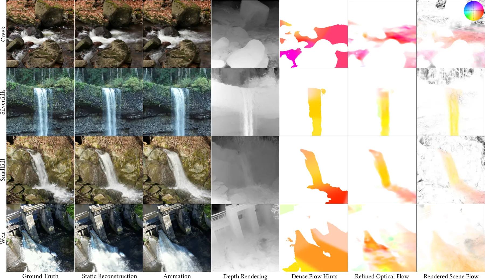
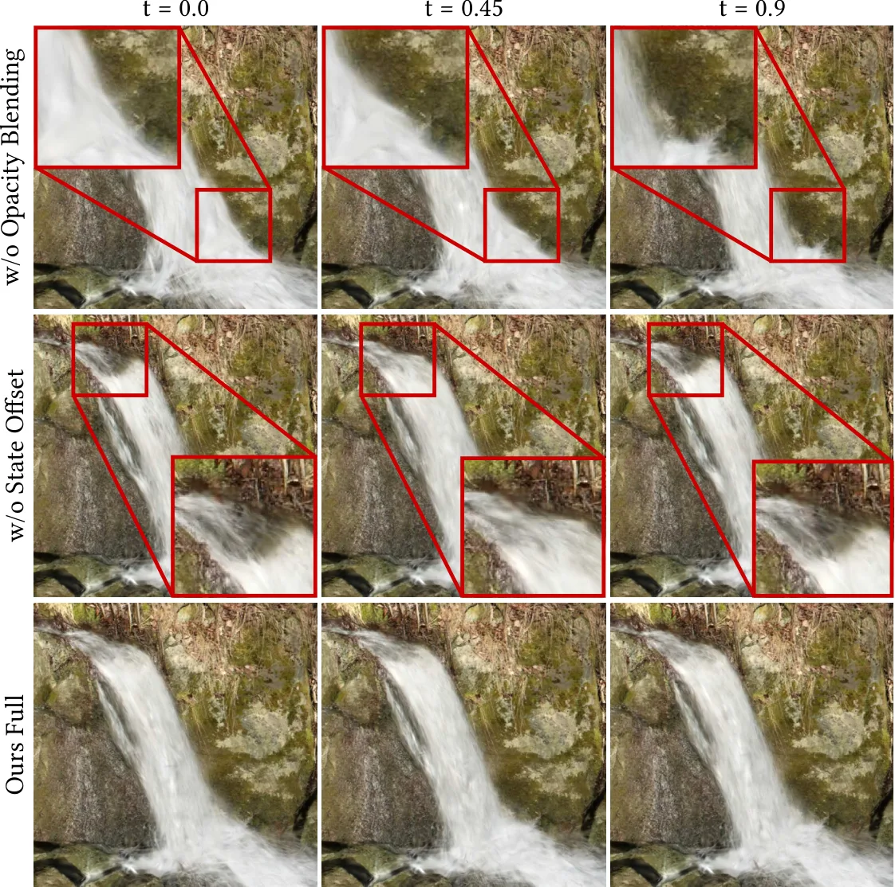
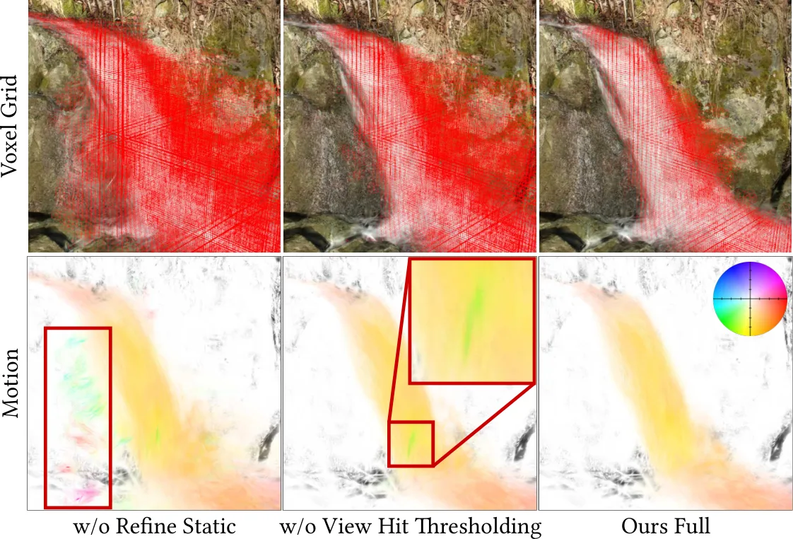
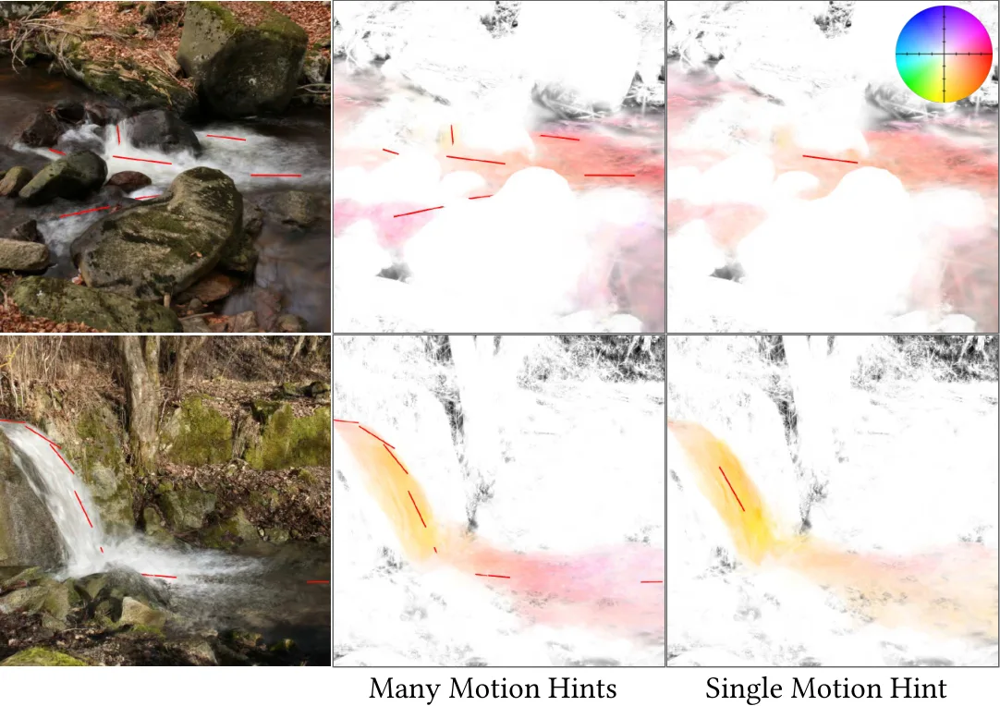
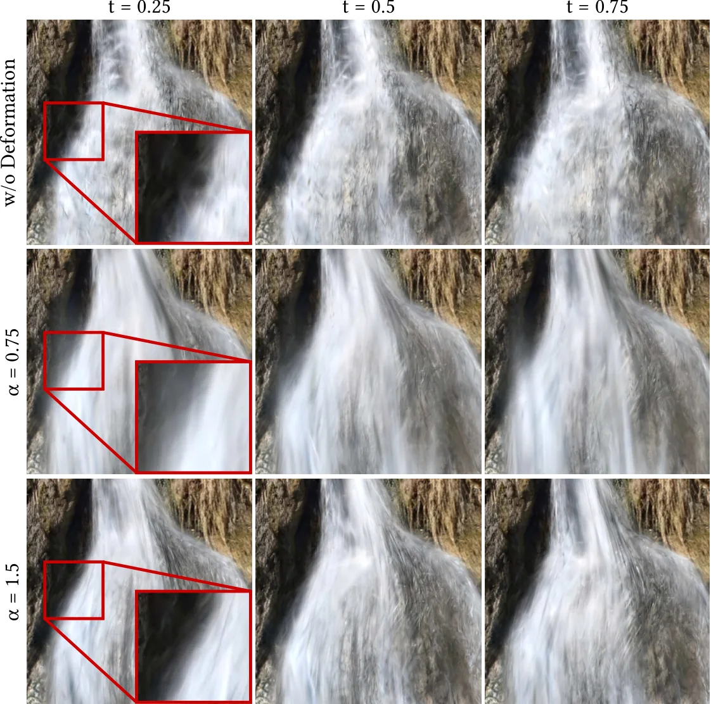

Make It Flow：在静态 3D 高斯溅射场景中给水做动画
Make It Flow: Animating Water in 3D Gaussian Splatting Scenes
把 2D 光流经深度重投影提升为体素 3D 欧拉运动场（静态/动态命中比与视角命中阈值做细化），再用 7 个 sigma 点的无迹变换以体积感知方式形变高斯图元，配合前/后向对称动画 + sin² 不透明度调度 + 逐高斯随机相位得到无缝循环；7 场景数据集上平均 333 FPS / 3.8 GiB（静态 3DGS 416 FPS / 2.0 GiB），预处理约 55 s，运动场仅占 2 MB 量级。
FPS
VRAM
preprocess
storage
作者、单位与技术谱系 · Research context
作者与单位
研究脉络
- 3D Gaussian Splatting (Kerbl et al., SIGGRAPH 2023)方法基座关系：本文直接在被冻结的静态 3DGS 重建上做动画，既不改其优化目标也不重新训练，只改写渲染期的图元参数。[论文 §3 与方法总览]
- Cinemagraphs / Holynski et al. 2021 ([HCSS21])思想来源关系：把 2D 电影自画像的“对称形变 + 静态速度场”思想改写成对 3D 高斯（拉格朗日粒子）的对称形变。[论文 §3.2.1、§3.3.2]
- 3D-Cinemagraphy (Li et al., [LCS*23]) / LoopGaussian ([LCW*24])问题相邻工作关系：同为把电影自画像提升到 3D 的相邻工作，也是本文的主要对照；本文复用前者发布的流估计实现与权重，但改用体素欧拉场而非 LDI 或高斯自相似。[论文 §2.2、§3.1、§3.2]
- 本篇推进：静态 3DGS 上的免仿真流体动画本篇推进关系：在“不动态采集、不物理仿真、不重新训练”的前提下首次给静态 3DGS 的流体区域做可循环动画，并把一次性预处理压到分钟级。[论文 §1、§4.1、表 3]
合作网络
- TU Braunschweig 计算机图形实验室（Computer Graphics Lab）同单位署名Kjell Keune → Florian Hahlbohm / Jannis Möller / Susana Castillo / Martin Eisemann / Marcus Magnor关系：共同署名（同单位、同一邮箱域）[arXiv 官方 HTML 首页]
- 对公开模型与工具的依赖Make It Flow 管线 → 3DGS (Kerbl et al. 2023) / SAM3 / COLMAP / Mahapatra & Kulkarni 流精化网络（实现与权重经 Li 等提供）关系：明确技术依赖（非共同署名）[论文 §3、§4.1]
- 对 LoopGaussian 的对照式集成本文框架与 GUI → LoopGaussian 的运动场 MLP 与对称动画关系：公开对照集成（把对方方法接入本文框架以获得公平比较）[论文 §4.2]
作者与单位来自论文首页署名与统一邮箱域（均为 TU Braunschweig 计算机图形实验室），通信作者身份原文未标注，因此不作推断。§4.1 的数据集规模、表 2 的显存/帧率与表 3 的预处理耗时均为论文报告值；关于“方法属于渲染侧而非几何/优化侧”的判断是基于其贡献描述的解读。合作网络只记录同单位署名与公开技术依赖，未发现公开合作边的部分不作补充。
方法本质拆解 · What actually changed
是不是微调？
既不是微调也不是从头训练：本文没有任何网络权重被更新。被改动的是“渲染时期的高斯参数”，而不是网络参数。管线里用到的两个网络都是现成的——光流精化用 Mahapatra 与 Kulkarni 的 SPADE U-Net 架构、并直接采用 Li 等提供的实现与预训练权重；分割用 SAM3；底层 3DGS 模型由输入提供。因此它是纯测试时/后处理算法，可复现性主要取决于这几个外部模型与那套体素融合代码。
有没有额外约束？
新增约束集中在四类变量上：(1) 运动范围被限制在 SAM3 掩码给出的流体区域；(2) 3D 运动提示 ℋ 与其屏幕空间归一因子 r^ℋ 决定了流场的稀疏引导位置与幅度；(3) 体素融合后用静态/动态命中比衰减伪运动、并用视角命中阈值 r^view 把病态体素置零；(4) 动画侧用幅度因子 r^ℳ 限制位移，用不透明度调度强制 𝒪^fw_k + 𝒪^bw_k = o，并要求首尾关键帧与零不透明度匹配以保证无缝循环。约束作用在掩码、体素、以及每个动态高斯的不透明度与相位上。
推理/后端到底做了什么？
推理分两段：一次性的场构建与逐帧渲染。场构建按掩码 32 s + 光流 18 s + 融合 5 s 的顺序执行，融合把各视角的 3×3 线性系统并行求解并把结果稀疏化成体素场，此后不再更新。逐帧渲染时，改写过的 CUDA 渲染器对每个动态高斯生成若干“虚拟实例”，按其本地动画状态 τ 取关键帧 k=⌊τK⌋ 并线性插值均值/协方差/不透明度，静态高斯完全不受影响。全程没有迭代式全局优化、没有因子图或 BA 后端，也没有逐帧求解。
方法本质是什么？
本质是把“2D 光流＝像素位移”这类视角相关量，通过深度反投影与多视角最小二乘提升成一个视角无关的 3D 速度场，再把“对像素做对称形变”改写成“对高斯（拉格朗日粒子）做体积感知的对称形变”。它改变的不确定性是“流体区域在时间维上的定义是否一致”：位置、协方差与不透明度都在渲染期按同一静态场被驱动，因此不同视角看到的是同一个运动，循环也由不透明度调度与共享关键帧保证。它没有做的是：不重建动态几何、不做物理仿真、不训练任何网络。
输入为已训练的静态 3DGS 模型与相机视角（外加人工 3D 运动提示与 SAM3 掩码）；改变的位置是高斯的均值/协方差/不透明度（渲染期形变，网络权重不变）；约束与合并动作是“多视角重投影联合求解 + 静态/动态命中比与视角命中阈值细化 + 无迹变换 + 前/后向对称与 sin² 不透明度调度”；直接效果是 7 场景平均 333 FPS / 3.8 GiB 的无缝循环水流动画，预处理约 55 s、运动场约 2 MB。

动机与问题Motivation
动机与问题
3DGS 与 NeRF 类表示把真实环境的重建与自由视角漫游做得很成熟，但它们默认场景静止，而流体区域尤其糟糕：高斯图元在流水处往往重建出时间不一致、结构不稳的模糊块，最终“水像是冻住了”。已有的动态高斯溅射方法主要面向显式移动的前景物体（人或刚体），依赖同步多视角采集或强数据先验，难以迁移到随手拍摄的野外数据；另一路用物理仿真给静态场景加动力学，效果可信但计算代价高、需要逐场景调试，还会明显改变场景外观。把 2D 电影自画像（cinemagraph）提升到 3D 的前作也有明显短板：基于分层深度图（LDI）的方案渲染慢、自由视角受限；基于高斯点云自相似性的方案（LoopGaussian）结构信息不足，做不出有方向的连贯流体运动。因此本文的问题被收窄为：不做动态采集、不做物理仿真，能否只在流体区域生成视觉可信且可无缝循环的运动？
方法Method
方法总览
输入是一套已训练好的静态 3DGS 模型及其训练视角（或用户定义相机位的渲染图）。流程分四段。第一段估计 2D 光流：用户在 3D 场景里交互给出运动提示 ℋ={(p_l,d_l)}（3D 位置 + 3D 方向，模长控制强度），提示投影到各视角得到稀疏光流图，配合 SAM3 对“water/waterfall”等提示生成的二值掩码，经距离加权插值变稠密，再由一个在流体运动上预训练的 SPADE U-Net 精化成各视角光流 ℱ_n。第二段把光流提升为 3D 场：用 3DGS 渲染的深度图 𝒟_n 把动态像素反投影到世界系，按“多视角重投影”最小化几何误差，把透视投影一阶线性化为 J_{n,x}，得到逐体素 3×3 线性系统 (Σ JᵀJ)v = Σ Jᵀv_n 并用 Gauss-Newton 在 GPU 上并行求解，得到体素中心速度，查询时三线性插值。第三段细化：再用一遍输入数据统计“静态命中/动态命中”比与视角命中数，抑制静态区域伪运动、剔除观测不足的体素。第四段动画与渲染：把高斯当拉格朗日粒子在该欧拉场里形变，得到前向/后向关键帧序列与不透明度序列，在改写过的 CUDA 渲染器里以“虚拟实例”共享参数缓冲渲染。
关键技术细节
几个可核验的实现细节：其一，运动场一次算好即固定为静态速度场（与 Holynski 等 2021 的假设一致），因此预处理只做一次。其二，细化公式为 ℳ(c) = (1 − min(1, w^stat_c / w^dyn_c)) · v，即一个体素被观测为静态的次数多于动态时，其速度按比例衰减；此外视角命中数低于阈值 r^view 的体素速度直接置零，因为共线观测下重投影问题病态。其三，高斯形变用 7 个 sigma 点的无迹变换迭代欧拉积分：σ_i = μ ± sqrt((3+λ)Σ)_⌈i/2⌉，λ=3α²−3，σ̃_i = σ_i + r^ℳℳ(σ_i)，再按权重 w^μ_i、w^Σ_i 更新 μ_{k+1} 与 Σ_{k+1}，从而在位移的同时传播协方差（体积感知）。其四，对称动画把 −ℳ 当作“反向场”近似逆场，前向序列与后向序列共享关键帧使 𝒜^fw_0 = 𝒜^bw_K，不透明度用 w^o_k = sin²(πk/2K) 分配并满足 𝒪^fw_k + 𝒪^bw_k = o（局部密度不变），端点处两侧均为 0 以保证循环无缝。其五，每个动态高斯有独立随机相位 t^off，渲染时按本地状态 τ=(t+t^off) mod 1 取关键帧 k=⌊τK⌋ 并对相邻关键帧的均值/协方差/不透明度线性插值。两个人工调节因子 r^ℋ（按提示模长中位数归一）与 r^ℳ（控制运动幅度）用于在运动场不含物理真值时限制位移范围。

实验Experiments
实验设置
数据来自作者新采的 7 个含流体的场景：Creek（103 图 / 1.59M 高斯 / 51K 动态 / 11 条提示）、Frogfall（186 / 6.72M / 26K / 12）、Silverfalls（67 / 5.62M / 51K / 10）、Smallfall（74 / 5.56M / 87K / 8）、Town（159 / 3.11M / 12K / 8）、Waterfall（158 / 5.26M / 182K / 14）、Weir（333 / 5.16M / 162K / 14），其中部分用 DSLR 拍照、部分用无人机录像，统一经 COLMAP 做相机参数、去畸变与对齐，再用默认超参在 4 倍下采样图上训练标准 3DGS。对照方法为 4DGS（受限 6.5M 高斯以内）、LoopGaussian（把其运动场 MLP 与对称动画接入本文框架以公平比较）、3D-Cinemagraphy（用最近数据视角做 LDI 重建，并把本文 3D 提示投影成稀疏光流提示）。指标是渲染性能与显存（VRAM、FPS），以及一次性预处理耗时与运动场存储；所有实验在同一台 RTX 4090 上完成。论文明确指出：随手拍摄场景没有运动真值、静态 3DGS 里的水本就是时间平均后的模糊区域，且不存在适合流体运动的无参考指标，因此运动质量以定性（视频）为主，只有效率做定量。
实验数字与比较
渲染效率（来源：论文表 2，7 场景平均）：本文 3.8 GiB / 333 FPS；静态 3DGS 参考 2.0 GiB / 416 FPS；4DGS 2.7 GiB / 392 FPS；LoopGaussian 6.1 GiB / 322 FPS；3D-Cinemagraphy 10.3 GiB / 不足 1 FPS。即相对静态重建，本文平均多占约 1.8 GiB、帧率下降约 20%，而相对 LoopGaussian 反而更省显存（Frogfall 场景 LoopGaussian 8.7 GiB vs 本文 5.5 GiB），因为 LoopGaussian 需要逐高斯评估 MLP。预处理与存储（来源：论文表 3）：本文平均 55 s（掩码 32 s、光流 18 s、融合 5 s），LoopGaussian 平均 6 分 01 秒（Waterfall 场景 13 分 20 秒、Weir 12 分 15 秒）；稀疏运动场平均仅 2.1 MB（最大 Creek 5.2 MB、Waterfall 4.0 MB），融合阶段峰值显存 13.4 GiB 且可通过限制初始体素分辨率约束。定性比较（图 2、图 3）：3D-Cinemagraphy 在贴近输入视角时观感好，但视角偏离后 LDI 表示出现几何不一致与缺失内容；4DGS 无法重建高频水动力学且在部分区域（如暗色岩石）不收敛到静态解；LoopGaussian 外观稳定但运动方向任意（图 3 用颜色编码投影运动方向显示其流场空间与时间上都不一致），作者归因于其对称插值混合了前后向位置而非分别渲染。
消融/失败边界
消融一（图 5 上排）：去掉不透明度混合后，一段动画的首尾帧不再一致，循环时因后向实例“弹回”起点出现可见跳变；加上 sin² 调度后首尾平滑。消融二（图 5 中排）：去掉逐高斯随机相位偏移后，瀑布顶部出现周期性重复图案，可见循环被感知到。消融三（图 6）：去掉“静态区域运动衰减”后，被错误重投影的流像素会让静态区域出现不该有的运动；去掉“视角命中阈值”后，共线观测导致的病态重投影会产生不连贯运动（下排），且体素形状也无法贴合动态区域。消融四（图 7）：单个方向提示在部分场景几乎等效于多条提示（上排），但像 Smallfall 这种“落下后转为水平流动”的场景单条提示不足以建模（下排）。明确的失败边界（图 9，Weir 场景）：当高斯几何本身不准（深度错误）或水面重建不好，重投影的流就是错的，最终表现为动画伪影；作者另外指出，对高反射或视觉上歧义的水面，3DGS 可能生成不足够的高斯，方法会失效。
局限与迁移Limitations & Transfer
局限与待核验
作者明确承认的限制有四点：运动场质量强依赖底层 3DGS 重建（深度不一致或重建伪影会直接传成动画伪影）；假设流体表面本身被重建得足够好，对高反射/歧义水面不成立；无法恢复重建表示中本就不存在的水体细节；由于深度取自可见水面上的高斯，运动基本被限制在这一表面层。我们的待核验项：(a) 论文称会公开完整实现（含预处理脚本、交互 GUI 与数据集），但抓取时无可用下载入口，端到端复现待核验；(b) 论文自己承认不存在合适的流体运动无参考指标，因此“优于 4DGS/LoopGaussian/3D-Cinemagraphy”的结论目前主要建立在视频与定性图上，量化优势只体现在显存/FPS/预处理时间；(c) 数据集仅 7 个场景且全部是瀑布、溪流、堰一类的下落/流动水，对其他流体只在图 8 用岩浆做了定性展示；(d) 提示与掩码需要人工给出，论文没报告提示数量对结果敏感性的系统统计（仅图 7 给出定性例子）。
与你研究路线的关系
可迁移点有三。第一，“把 2D 观测先验经深度重投影提升为一致的 3D 场，并用联合线性系统一次求解”这一套路，与你在多传感器/多历元融合里“把不同来源的局部观测融合成一个可查询场”同构；它的实现细节（逐体素 3×3 系统、GPU 并行、三线性查询）可直接借用。第二，细化步骤里的“静态命中/动态命中比”和“视角命中阈值”是两个可复用的可靠性门控：前者回答“这个体素到底属于哪一类”，后者回答“这个位置的观测够不够支撑一个解”，与你在退化/异常检测里需要的“观测是否足以支撑状态更新”是同一类判据。第三，稀疏体素场（平均 2 MB）+ 虚拟实例共享缓冲，是把“时间维”加进已有地图表示的低成本工程范式；对称前/后向 + 不透明度调度保证循环 C0 连续，对应到你的场景就是“两趟处理结果如何在边界处保持一致”。下一步实验建议：(1) 在自建多历元点云上做最小 A/B——朴素加权平均 vs 多视角重投影联合求解，量化场的一致性与噪声；(2) 把“静态/动态命中比 + 视角命中阈值”移植为你的观测可靠性门控，检查它对异常检测误报率的影响；(3) 用其稀疏场 + 三线性查询接口做一次“动态层叠加在静态地图上”的原型，评估存储与时延开销。







